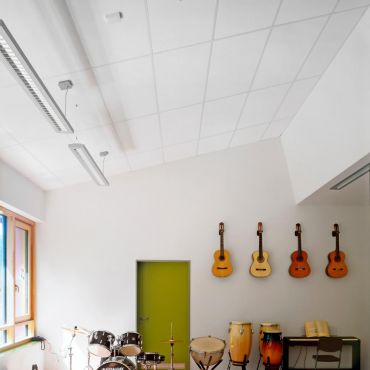

In order to provide flexibility of use and adaptability, it is now more important than ever to specify the correct type of suspended ceiling.
Building layouts are often revamped every few years and additional services, for example telephone lines, heating and ventilation ducts, data cabling, fire alarms etc, are introduced to upgrade and improve facilities. A suspended ceiling will provide a void or plenum, through which such services can be routed. Suspended ceilings also offer easy access for routine maintenance and general repairs.
As your satisfaction is of paramount importance we'll inform you of the best products for the job in hand. We are happy to advise on which systems offer the best functionality, performance, durability and cost effectiveness. For example, ceilings that are particularly suitable for use in high humidity areas such as kitchens or showers, or have superior acoustic properties for use in schools and offices. There may also be a requirement for structural fire protection in residential apartments, or a hospital, with 1/2hr or 1hr rating being achievable.